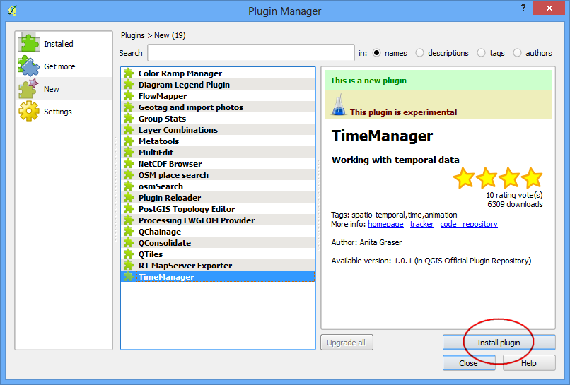
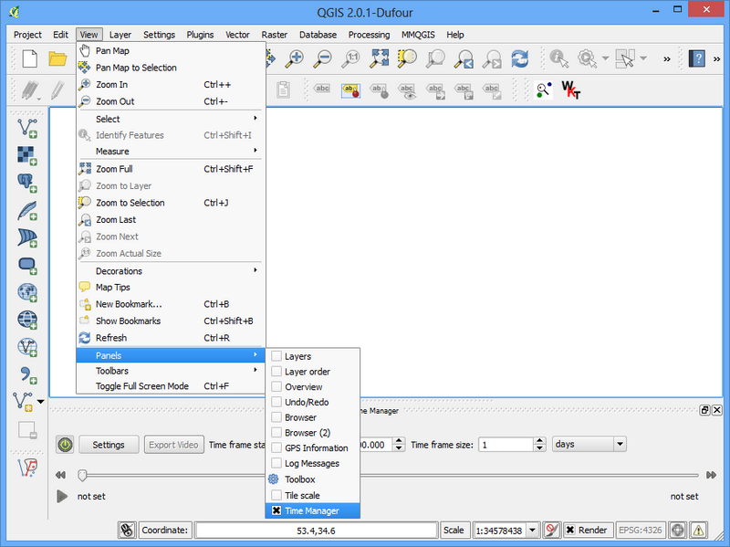

Experimental Plugins
Now you know how to install and find an External Plugin in QGIS. Let’s explore some advanced options. Sometimes you are looking for a specific plugin, but cannot find it in the Get more tab. It maybe because the plugin is marked Experimental. Here is how to install experimental plugins.
- Open Plugin Manager by . Click on the Settings tab. You will see an option called Show also experimental plugins. Click the checkbox next to it, to enable it.

- You will see a new tab called New. The newly enabled experimental plugins will show up here.
Nota
The New tab will appear only temporarily once you enable the experimental plugins. The next time you open Plugin Manager, the experimental plugins will show alongside regular plugins in the Get more tab.

- Let’s install a plugin called TimeManager. Click on the plugin name and then Click Install.

- Now when you come back to the main QGIS window, you will see a new Panel at the bottom of the canvas. This panel is created by the TimeManager plugin. This is yet another way of plugins to add useful functionality to the user interface .

- You can enable/disable this panel from .
